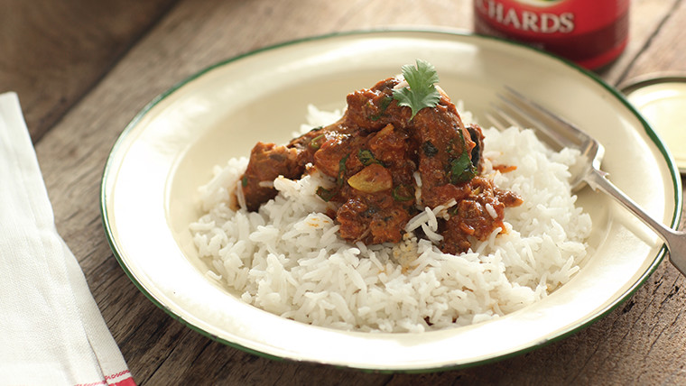

Fish Recipe

Description
I love pilchards and feel like they're eaten more in SA than anywhere else in the world.
Here, I've taken a bit of a risk and made something with them that's similar to tahdig –
it's like intshela or iskhokho (the crisped up bottom of the pot after preparing pap)
and it's delicious, whether you get the shape perfect or not.
Ingredients
- 410g lucky star tin fish
- 410g mix vegetable curry tin
- 1 finely chopped onion
- 1 green pepper finely chopped
- 1 gtated tomato
- 1 chicken cube stock
- 1 tsp rajah
- 1 tsp BBQ
- 1 tsp paprika
- 15 ml cooking oil
- 1 tsp steak and chop spice
- 3 tbs brown onion
Steps
- Pour oil on the pot the pour your pepper, and onion. Let it fry
- Stir then open the tin fish and clean it by removing those small bones
- Once the onion is cooked then pour the grated tomato.
- Stir again then spice the fish until it's cooked
- Then pour the tin fish aftsr pouring the tin fish
- Stir then open the vegetable curry tin. Pour it over the fish mixture.
- After let it cooked then pour if over the fish and curry mix drizzle that table spoon serve and the tin fish with rice